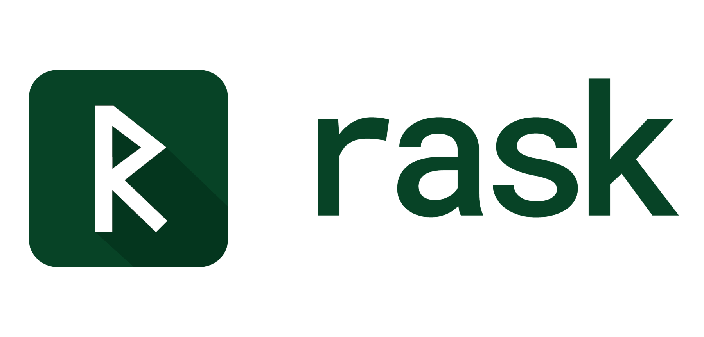
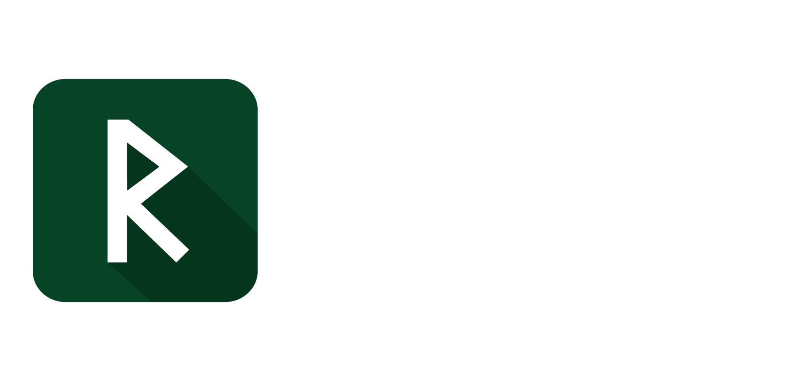

What Rask is
A systems language built around one bet: if references can’t be stored, lifetime annotations stop being necessary.
Borrow a value for a call or an expression and it works the way you’d expect. Put the borrow in a struct field, or return it, and there’s no syntax for what you’re asking — which is the point. Nothing outlives the thing it points at, so there’s nothing to track, and signatures carry types and nothing else.
Graphs need stored references, so exactly one kind exists: a Link into a
Rack. The rack owns every node and outlives every link into it, so even that
one has no lifetime to name.
Somewhere between Rust and Go. Closer to Rust on safety, closer to Go on ceremony.
import fs
import io
func grep(path: string, pat: string) -> void or io.IoError {
mut file = try fs.open(path)
ensure file.close()
let text = try file.read_text()
for line in text.lines() {
if line.contains(pat) { println(line) }
}
}
Three rules meet in those eight lines. fs.open hands back a linear resource
the compiler makes you consume exactly once. ensure defers that consumption
to the end of the scope. try returns early on failure — and because the
consumption is already scheduled, leaving early still closes the file. No
defer discipline to remember, no destructor running out of sight.
Where to start
Rask is early and a solo project. Expect gaps in these chapters and bugs in the compiler; the issue tracker is the honest picture.
New here. Install it, then take the tour. Each step is one idea: what problem it solves, the idea working, and a function for you to write that its tests check. Nothing to install to look around: the playground runs Rask in the browser, and the tour’s pages run their own code.
Already writing Rask. The language card is the whole language on one page for looking a rule up. The example programs are complete and CI-checked. The specs are the normative wording when the other two disagree.
Here for the design. The blog is the long-form argument; CORE_DESIGN.md is the principles it falls out of, and RULINGS.md is how open questions get settled.
Try it in the browser
The playground runs Rask without installing anything. It’s the interpreter compiled to WebAssembly, so the code runs in your browser rather than on a server.
Write code on the left, Ctrl+Enter to run, output on the right. Run tests
runs the file’s test blocks instead of main. The examples dropdown loads the
programs from
examples/, and Copy
link gives you a URL with your code in it.
What it can’t do
A browser has no files, no sockets, no clock and no threads, so anything needing one of those is refused with a message rather than half-working:
fs, io, net, http | no filesystem or sockets |
time | no clock — which is also why benchmark blocks don’t run here |
spawn { }, Thread.spawn { }, ThreadPool.spawn { }, using Multitasking, using ThreadPool | no threads |
extern "C", import c | no libc to call |
Everything else runs: collections, structs, enums, generics, interfaces, pattern
matching, closures, error handling, comptime. Recursion is capped a few
hundred frames deep, because the browser puts a much lower ceiling on call
depth than an OS thread does.
The dropdown only lists examples that actually run here. The rest are in examples/; to run those, install Rask and run the file directly.
Source
Install it
Rask is young and changes between releases. Expect breaking changes.
The one line
curl -fsSL https://rask-lang.dev/install.sh | sh
That downloads the latest release’s rask binary for your machine into
~/.local/bin. Releases have binaries for Linux on x86_64 and macOS on
Apple silicon; on anything else the script says so and stops, and you build
from source (below). It doesn’t touch anything else, so uninstalling is
deleting ~/.local/bin/rask.
Two things it checks for and tells you about:
~/.local/binon your PATH. If it isn’t, the script prints the line to add to your shell’s startup file.- A C compiler.
rask runcompiles your program to machine code, and the last step, linking, uses the system’scc. Without one only the interpreter works (rask run --interp). On macOS,xcode-select --installgets you one; on Linux, your package manager’sgcc.
Check it worked:
rask --version
To pick a release other than the latest, or install somewhere else, set
RASK_VERSION or RASK_INSTALL_DIR for the sh:
curl -fsSL https://rask-lang.dev/install.sh | RASK_VERSION=0.6.0 sh
The script itself is docs/install.sh if you’d rather read it first.
Get the tour
The tour is a set of files you run and edit, so get a copy of them:
git clone --depth 1 https://github.com/rask-lang/rask
cd rask/docs/book/src/learn
rask run 01-hello.rk
Open README.md in that directory, or read it here.
The tour follows the repository’s main branch, which can be ahead of the
latest release. If a step fails with an error its text doesn’t mention, your
rask is older than the tour: build it from source as below.
Build from source
You need Rust (from rustup.rs), git and a C compiler.
git clone https://github.com/rask-lang/rask
cd rask/compiler
cargo build --release -p rask-cli
The binary is compiler/target/release/rask. Put that directory on your
PATH, or copy the file to ~/.local/bin.
The commands
| Command | What it does |
|---|---|
rask run file.rk | Compile and run a program |
rask run --interp file.rk | Run it on the interpreter instead, no C compiler needed |
rask test file.rk | Run the file’s test blocks |
rask check file.rk | Type-check without running |
rask build | Build the package in this directory into build/ |
rask fmt file.rk | Format the file |
rask lint file.rk | Point out style and naming problems |
rask help lists the rest.
Next
Take the tour: one idea per step, starting with hello world.
A tour of Rask
Each step is one short file that teaches one thing. It says what problem the idea solves, shows it working, then leaves a function for you to write with only that idea and the ones before it. The tests at the bottom tell you when you’re done.
On this site, each page is a step, and its code can be edited and run in
place. In a clone of the repository the steps are the .rk files in
docs/book/src/learn/. With rask installed (Install it
says how), open a step in your editor and run its tests from that directory:
rask test 02-functions.rk
Until you’ve done the step they fail, and that’s the point. A step that
says it doesn’t compile yet is meant to be read through the compiler’s
error. Without a C compiler, add --interp to any command to run it on the
interpreter instead.
If you’re stuck, solutions/ has an answer for every step.
The steps
- Hello
- Functions
- Names and strings
- Names that change
- if and else
- while
- for
- Vec
- Walking a Vec
- Structs
- Methods
- Enums and match
- Enums that carry data
- Optionals
- Map
- Errors are values
- try and catch
- Changing what you’re given
- Giving a value away
- Copying on purpose
- Changing an item in a Vec
- Closures
- Chains
- Working with text
- Generic functions
- Interfaces
- Cleanup that always runs
- Racks and links
- Tasks and channels
- Shared state
- Work done while compiling
- Splitting a program into files
Hello
A program starts at the function called main, and println prints a line.
Run this one:
rask run 01-hello.rk
Then make it greet you instead, and run it again.
func main() {
println("Hello, Rask!")
}
Functions
A function says what it takes and what it gives back. It gives the value
back with return, every time: the last line of a function is not returned
on its own, the way it is in Rust or Ruby.
func double(n: i32) -> i32 {
return n * 2
}
i32 is a 32-bit integer. You’ll also meet i64, f64 (a float), bool
and string.
Your turn: make square give back n times n. The test blocks at the
bottom check it. Run them with
rask test 02-functions.rk
and they fail with “not yet implemented” until you replace todo().
func square(n: i32) -> i32 {
todo()
}
test "double" {
assert double(4) == 8
}
test "square" {
assert square(3) == 9
assert square(-4) == 16
}
Names and strings
let gives a value a name. A string can hold values in braces: “{name}”
becomes whatever name holds. There’s no + for strings, so this is how
you build one.
func greeting(name: string) -> string {
let mark = "!"
return "Hello, {name}{mark}"
}
Your turn: label(“Ada”, 36) should give “Ada is 36 years old”. Numbers go into braces the same way strings do.
func label(name: string, age: i32) -> string {
todo()
}
test "greeting" {
assert greeting("Ada") == "Hello, Ada!"
}
test "label" {
assert label("Ada", 36) == "Ada is 36 years old"
assert label("Alan", 41) == "Alan is 41 years old"
}
Names that change
A let name holds its value for good. A name whose value changes is made
with mut. You have to pick, so when you read let you know the value
stays put for the rest of the block.
This file doesn’t compile. Run rask test 04-mut.rk, read what the
compiler says, and fix it.
func total(a: i32, b: i32, c: i32) -> i32 {
let sum = a
sum += b
sum += c
return sum
}
test "total" {
assert total(1, 2, 3) == 6
}
if and else
The condition needs no parentheses. The block after it always has braces, even when it’s one line.
func abs(n: i32) -> i32 {
if n < 0 {
return -n
}
return n
}
if also gives a value. When each side is a single expression, write it
after a colon instead of a block:
let kind = if n % 2 == 0: "even" else: "odd"
% is the remainder, so 9 % 3 == 0.
Your turn: fizz gives “Fizz” for multiples of 3, “Buzz” for multiples of
5, “FizzBuzz” for multiples of both, and the number itself otherwise.
Chain the cases with else if.
func fizz(n: i32) -> string {
todo()
}
test "abs" {
assert abs(-3) == 3
assert abs(3) == 3
}
test "fizz" {
assert fizz(9) == "Fizz"
assert fizz(10) == "Buzz"
assert fizz(30) == "FizzBuzz"
assert fizz(7) == "7"
}
while
while repeats its block as long as the condition holds. Parameters are
let names, so a function that counts something down copies the value into
a mut name first.
func halvings(n: i32) -> i32 {
mut left = n
mut steps = 0
while left > 1 {
left = left / 2
steps += 1
}
return steps
}
Integer division drops the remainder: 7 / 2 == 3.
Your turn: digit_sum(1234) is 1 + 2 + 3 + 4 = 10. n % 10 is the last
digit and n / 10 drops it.
func digit_sum(n: i32) -> i32 {
todo()
}
test "halvings" {
assert halvings(8) == 3
assert halvings(1) == 0
}
test "digit sum" {
assert digit_sum(1234) == 10
assert digit_sum(7) == 7
assert digit_sum(0) == 0
assert digit_sum(90210) == 12
assert digit_sum(1999999999) == 82
}
for
for walks a range. 0..n stops before n; 1..=n includes it.
func sum_to(n: i32) -> i32 {
mut sum = 0
for i in 1..=n {
sum += i
}
return sum
}
Your turn: factorial(5) is 1 * 2 * 3 * 4 * 5 = 120, and factorial(0) is 1.
func factorial(n: i32) -> i32 {
todo()
}
test "sum to" {
assert sum_to(4) == 10
}
test "factorial" {
assert factorial(5) == 120
assert factorial(1) == 1
assert factorial(0) == 1
}
Vec
A Vec is a list that can grow. Vec.from([...]) makes one from values,
Vec.new() makes an empty one, push adds to the end, len() counts, and
v[0] is the first item. Pushing changes the list, so it needs a mut name.
func countdown(from: i32) -> Vec<i32> {
mut list = Vec.new()
mut n = from
while n > 0 {
list.push(n)
n -= 1
}
return list
}
A Vec can’t go straight into a string, because there’s no one right way to
show a list to a user. "{list:debug}" shows it the way a programmer wants
to see it, [3, 2, 1].
Your turn: evens(10) is the even numbers below 10: [0, 2, 4, 6, 8].
func evens(below: i32) -> Vec<i32> {
todo()
}
test "countdown" {
let list = countdown(3)
assert list.len() == 3
assert list[0] == 3
assert list == Vec.from([3, 2, 1])
}
test "evens" {
assert evens(10) == Vec.from([0, 2, 4, 6, 8])
assert evens(0).len() == 0
}
Walking a Vec
for walks a Vec the same way it walks a range, one item at a time.
func sum(numbers: Vec<i32>) -> i32 {
mut total = 0
for n in numbers {
total += n
}
return total
}
Your turn: largest gives the biggest number in the list. You can assume
the list isn’t empty, so start from numbers[0].
func largest(numbers: Vec<i32>) -> i32 {
todo()
}
test "sum" {
assert sum(Vec.from([1, 2, 3])) == 6
}
test "largest" {
assert largest(Vec.from([3, 9, 4])) == 9
assert largest(Vec.from([-5, -2, -8])) == -2
}
Structs
A struct groups a few values that belong together into one type of your
own. A point on a map is an x and a y; passing them around as two loose
integers invites mixing them up, while a Point keeps them together and
names them.
You build one like a function call, giving every field by name, and read a
field with a dot: p.x.
struct Point {
x: i32
y: i32
}
func distance_from_origin(p: Point) -> i32 {
return abs(p.x) + abs(p.y)
}
func abs(n: i32) -> i32 {
return if n < 0: -n else: n
}
Changing a struct in place comes later. For now, a function that “moves” a point builds a new one from the old one’s fields.
Your turn: step_right(p, 3) gives back a new Point whose x is three more
than p’s, with the same y. Point(x: 1, y: 2) becomes Point(x: 4, y: 2).
func step_right(p: Point, by: i32) -> Point {
todo()
}
test "distance" {
assert distance_from_origin(Point(x: 3, y: -4)) == 7
}
test "step right" {
let p = step_right(Point(x: 1, y: 2), 3)
assert p.x == 4
assert p.y == 2
}
Methods
A function that belongs to a type is called a method, and methods go in an
extend block for that type. A method that takes self is called on a
value, p.flipped(), and self is that value. One without self is called
on the type itself, Point.origin(), and is usually a way to build one.
struct Point {
x: i32
y: i32
}
extend Point {
func origin() -> Point {
return Point(x: 0, y: 0)
}
func flipped(self) -> Point {
return Point(x: self.y, y: self.x)
}
// Your turn: `a.plus(b)` adds the two points field by field.
func plus(self, other: Point) -> Point {
todo()
}
}
test "flipped" {
let p = Point(x: 1, y: 2).flipped()
assert p.x == 2
assert p.y == 1
}
test "plus" {
let p = Point(x: 1, y: 2).plus(Point(x: 10, y: 20))
assert p.x == 11
assert p.y == 22
assert Point.origin().plus(p).x == 11
}
Enums and match
An enum is a type whose value is one choice from a fixed list. A direction is North, East, South or West and nothing else.
You could use a string for that, “north”, but then “nrth” is a direction too, and nothing tells you which strings are allowed. With an enum the list is written down once, the compiler rejects anything not on it, and a reader sees every possibility in one place.
match is how you act on an enum, and you’ll see it everywhere in Rask. It
picks the arm for the value it has and must cover every case: leave one out
and the program doesn’t compile. So when you add a fifth case to an enum,
the compiler shows you every match that has to handle it. Like if,
match gives a value.
enum Direction {
North
East
South
West
}
func opposite(d: Direction) -> Direction {
return match d {
Direction.North => Direction.South,
Direction.East => Direction.West,
Direction.South => Direction.North,
Direction.West => Direction.East,
}
}
Your turn: turn_right gives the direction a quarter turn clockwise, so
North becomes East.
func turn_right(d: Direction) -> Direction {
todo()
}
test "opposite" {
assert opposite(Direction.North) == Direction.South
}
test "turn right" {
assert turn_right(Direction.North) == Direction.East
assert turn_right(Direction.West) == Direction.North
}
Enums that carry data
Each case of an enum can carry its own fields, and each case can carry different ones. A card payment has a fee; cash doesn’t; a free order has no amount at all. A struct would need every field for every case, with some of them meaningless, and nothing would stop you reading a card fee off a cash payment. Here the fee only exists where it makes sense.
A match arm names the fields it wants, and inside the arm they’re
ordinary names. That’s the only way to get at them, so you can’t read the
fee without first having checked that it’s a card.
enum Payment {
Cash(amount: i32)
Card(amount: i32, fee: i32)
Free
}
func charged(p: Payment) -> i32 {
return match p {
Payment.Cash(amount) => amount,
Payment.Card(amount, fee) => amount + fee,
Payment.Free => 0,
}
}
A field can be bound under another name, Payment.Cash(amount: a), and one
you don’t need can be left out of the pattern.
Your turn: receipt gives “cash 10”, “card 10 + 2 fee” or “free”.
func receipt(p: Payment) -> string {
todo()
}
test "charged" {
assert charged(Payment.Card(amount: 10, fee: 2)) == 12
assert charged(Payment.Free) == 0
}
test "receipt" {
assert receipt(Payment.Cash(amount: 10)) == "cash 10"
assert receipt(Payment.Card(amount: 10, fee: 2)) == "card 10 + 2 fee"
assert receipt(Payment.Free) == "free"
}
Optionals
Some answers don’t always exist. The first negative number in a list of positive ones; the age of someone you’ve never heard of. Many languages answer with null, or with -1, and the caller has to remember to check. Forget, and the program carries on with a value that isn’t one.
In Rask the type says so: i32? is an i32 or none. You can’t do sums
with an i32?, so you can’t forget. You get the number out first:
x ?? 0 the number, or 0 when there's none
if x? as n { } run the block only when there's a number, as `n`
x is none true when there's no number
A function returning i32? returns a plain number or none.
func first_negative(numbers: Vec<i32>) -> i32? {
for n in numbers {
if n < 0 {
return n
}
}
return none
}
func describe(numbers: Vec<i32>) -> string {
if first_negative(numbers)? as n {
return "starts going wrong at {n}"
}
return "all fine"
}
Your turn: step 9’s largest assumed the list wasn’t empty. Make it give
none for an empty list instead of crashing.
func largest(numbers: Vec<i32>) -> i32? {
todo()
}
test "first negative" {
assert first_negative(Vec.from([4, -1, -7])) == -1
assert first_negative(Vec.from([4, 5])) is none
assert (first_negative(Vec.from([4])) ?? 0) == 0
assert describe(Vec.from([3, -2])) == "starts going wrong at -2"
}
test "largest" {
assert largest(Vec.from([3, 9, 4])) == 9
assert largest(Vec.from([-5, -2, -8])) == -2
assert largest(Vec.new()) is none
}
Map
A Vec finds things by position. Often you want to find them by name
instead: someone’s phone number, a word’s count. Searching a Vec for the
name gets slower the longer the list; a Map goes straight to it.
m[key] = value adds or replaces. m[key] reads, and stops the program
if the key isn’t there. m.get(key) is the careful read: it gives an
optional, none for a missing key, so step 14’s ?? and ? as work on it.
m.contains(key) asks whether it’s there.
func phone_book() -> Map<string, string> {
mut book = Map.new()
book["Ada"] = "555-0100"
book["Alan"] = "555-0199"
return book
}
func number_of(name: string) -> string {
return phone_book().get(name) ?? "unknown"
}
A Map hands its entries back in no particular order, so don’t rely on one.
Your turn: count_words counts how often each word appears. ?? comes
after arithmetic, so m.get(k) ?? 0 + 1 means m.get(k) ?? 1; put the
?? in parentheses before adding to it.
func count_words(words: Vec<string>) -> Map<string, i32> {
todo()
}
test "phone book" {
assert number_of("Ada") == "555-0100"
assert number_of("Grace") == "unknown"
assert phone_book().contains("Alan")
}
test "count words" {
let counts = count_words(Vec.from(["to", "be", "or", "not", "to", "be"]))
assert counts["to"] == 2
assert counts["or"] == 1
assert counts.len() == 4
assert count_words(Vec.from(["a", "a", "a"]))["a"] == 3
assert count_words(Vec.new()).len() == 0
}
Errors are values
Taking money out of an account can fail, and the caller needs to know. Exceptions tell them by jumping out of the function, and nothing in the function’s signature warns that it might. Error codes don’t jump, but they are easy to ignore.
In Rask, a function that can fail says so in its return type: i32 or BankError is either a new balance or a reason. The error is an ordinary
value, usually an enum, and the function returns it like any other value.
The caller can’t ignore the result: calling withdraw and dropping what it
gives back is a compile error. r is BankError asks which one you got,
and r is BankError.NotPositive whether it was that error in particular.
if r is BankError as e { } runs the block only for an error, named e,
the way ? as does for an optional. r! takes the balance out and stops
the program if it’s an error, which is right when an error here could only
be a bug.
enum BankError {
Overdrawn(short: i32)
TooLarge(over: i32)
NotPositive
}
func withdraw(balance: i32, amount: i32) -> i32 or BankError {
if amount > balance {
return BankError.Overdrawn(short: amount - balance)
}
return balance - amount
}
Your turn: deposit adds amount to the balance. An amount of zero or
less is NotPositive. The bank takes at most 1000 at a time; more than
that is TooLarge, carrying how far over the limit it was.
func deposit(balance: i32, amount: i32) -> i32 or BankError {
todo()
}
test "withdraw" {
assert withdraw(10, 3)! == 7
assert withdraw(10, 30) is BankError
}
test "deposit" {
assert deposit(10, 5)! == 15
assert deposit(0, 1000)! == 1000
assert deposit(10, 0) is BankError.NotPositive
assert deposit(10, -3) is BankError.NotPositive
assert deposit(10, 1001) is BankError
let r = deposit(10, 1250)
assert r is BankError
if r is BankError as e {
assert e == BankError.TooLarge(over: 250)
}
}
try and catch
Most code that meets an error can’t do anything useful about it, and
should hand it to whoever called it. Checking every result by hand with
is would bury what the function does under what could go wrong.
try r takes the value out of r, or returns the error from the function
you’re in, right there. The function has to be able to return that error,
so its own type says or BankError too.
r catch e => fallback deals with the error where it happens instead:
it’s the value, or, when r is an error, whatever comes after =>, with
the error named e. catch _ => throws the error away, in writing.
enum BankError {
Overdrawn(short: i32)
}
func withdraw(balance: i32, amount: i32) -> i32 or BankError {
if amount > balance {
return BankError.Overdrawn(short: amount - balance)
}
return balance - amount
}
func pay_rent_and_food(balance: i32) -> i32 or BankError {
let after_rent = try withdraw(balance, 700)
return try withdraw(after_rent, 200)
}
func left_after_rent(balance: i32) -> i32 {
return withdraw(balance, 700) catch _ => 0
}
Your turn: pay_all pays each bill in turn and gives the balance that’s
left, or the first error it meets. try does both.
func pay_all(balance: i32, bills: Vec<i32>) -> i32 or BankError {
todo()
}
test "rent" {
assert pay_rent_and_food(1000)! == 100
assert pay_rent_and_food(800) is BankError
assert left_after_rent(500) == 0
}
test "pay all" {
assert pay_all(100, Vec.from([10, 20, 30]))! == 40
assert pay_all(100, Vec.new())! == 100
let r = pay_all(50, Vec.from([30, 40, 5]))
assert r is BankError
if r is BankError as e {
assert e == BankError.Overdrawn(short: 20)
}
}
Changing what you’re given
Every function so far has only read its parameters. That’s the default,
and it’s cheap: a function reads a Vec where the caller keeps it, without
copying it. The compiler calls this borrowing, and you’ll see the word
in error messages. A borrowed value can’t be changed: a scores.push(1) in
a function that only reads scores is a compile error.
So when a function should change the caller’s value, it says mutate, and
the caller writes mutate too. You can tell which calls might change your
data by reading the calls, without opening every function.
A method that changes its value takes mutate self. There the value it’s
called on is the thing being changed, so the call is just p.heal(5).
struct Player {
name: string
health: i32
}
extend Player {
func heal(mutate self, amount: i32) {
self.health += amount
}
}
func add_bonus(mutate scores: Vec<i32>, bonus: i32) {
for i in 0..scores.len() {
scores[i] += bonus
}
}
Your turn: cap lowers every score above max to max, in the
caller’s own Vec.
func cap(mutate scores: Vec<i32>, max: i32) {
todo()
}
test "bonus" {
mut scores = Vec.from([1, 2])
add_bonus(mutate scores, 10)
assert scores == Vec.from([11, 12])
mut p = Player(name: "Ada", health: 5)
p.heal(5)
assert p.health == 10
}
test "cap" {
mut scores = Vec.from([4, 70, 9, 12])
cap(mutate scores, 10)
assert scores == Vec.from([4, 10, 9, 10])
cap(mutate scores, 5)
assert scores == Vec.from([4, 5, 5, 5])
}
Giving a value away
Sometimes a function keeps what you give it: it puts your list into an order and returns the order. Now two names reach one list, yours and the order’s. If both could change it, editing one would quietly edit the other, and which one cleans the list up when it’s no longer needed?
Rask’s answer is that a value has one owner. A parameter marked take
becomes the function’s to keep, and the name you passed in is gone: using
it afterwards is a compile error. The compiler calls this a move: the
value moved into the function, and the error says “use of moved value”.
Small values (numbers, bools, strings, small structs) are copied instead,
so this only ever happens to things like a Vec.
This file doesn’t compile. Run rask test 19-take.rk, read the error, and
fix summary so it doesn’t use items after giving it away. The compiler
suggests a copy; there’s a better fix, since the order has the items now.
struct Order {
customer: string
items: Vec<string>
}
func place(customer: string, take items: Vec<string>) -> Order {
return Order(customer: customer, items: items)
}
func summary(customer: string, count: i32) -> string {
mut items = Vec.new()
for _ in 0..count {
items.push("tea")
}
let order = place(customer, items)
return "{order.customer}: {items.len()} items"
}
test "summary" {
assert summary("Ada", 2) == "Ada: 2 items"
assert summary("Alan", 0) == "Alan: 0 items"
}
Copying on purpose
Copying a list costs time and memory, more the longer it is. Plenty of
languages copy behind your back, and a slow program ends up slow in lines
that look innocent. Rask never copies anything big unless you ask, and you
ask with .clone(), so every copy is there to see.
You need one when you want a changed version of something and the original
too. A borrowed parameter can’t be changed (step 18), so to build on it you
clone it into a mut name of your own and change that.
func sorted_copy(numbers: Vec<i32>) -> Vec<i32> {
mut out = numbers.clone()
out.sort()
return out
}
Strings are the exception that doesn’t feel like one: they can’t be changed in place, so sharing one is safe and there’s never a reason to clone a string.
Your turn: with_extra(list, x) gives a new list, list with x on the
end. The caller’s list stays as it was.
func with_extra(list: Vec<i32>, x: i32) -> Vec<i32> {
todo()
}
test "sorted copy" {
let numbers = Vec.from([3, 1, 2])
assert sorted_copy(numbers) == Vec.from([1, 2, 3])
assert numbers == Vec.from([3, 1, 2])
}
test "with extra" {
let list = Vec.from([1, 2])
assert with_extra(list, 3) == Vec.from([1, 2, 3])
assert with_extra(list, 9) == Vec.from([1, 2, 9])
assert list == Vec.from([1, 2])
assert with_extra(Vec.new(), 4) == Vec.from([4])
}
Changing an item in a Vec
One change to an item in a Vec is one line: team[i].health -= 3. For
several, you’d want a name for the item. But a Player is too big to copy
(step 19), so let p = team[i] would be a second name for an item the Vec
owns, and a change through either name would change both. That doesn’t
compile.
with team[i] as p { ... } names the item where it sits: changing p
changes the item in the Vec. While the block runs, the Vec can’t grow or
shrink, because a Vec that grows may move its items somewhere else in
memory, and p would be left pointing at the old place.
struct Player {
name: string
health: i32
alive: bool
}
func rest(mutate team: Vec<Player>, i: usize) {
with team[i] as p {
p.health += 10
p.alive = true
}
}
Positions in a Vec are usize, an unsigned integer as wide as a memory
address. len() gives one too.
Your turn: hit takes damage off player i. If that leaves them at zero
or below, their health is 0 and they’re no longer alive.
func hit(mutate team: Vec<Player>, i: usize, damage: i32) {
todo()
}
test "hit" {
mut team = Vec.from([
Player(name: "Ada", health: 10, alive: true)
Player(name: "Alan", health: 10, alive: true)
])
hit(mutate team, 1, 4)
assert team[1].health == 6
assert team[1].alive
hit(mutate team, 1, 9)
assert team[1].health == 0
assert !team[1].alive
assert team[0].health == 10
rest(mutate team, 1)
assert team[1].alive
}
Closures
Counting the even numbers in a list and counting the negative ones are the same loop with a different test inside. Rather than write the loop twice, write it once and take the test as a parameter.
A closure is a small function written where it’s used: |n| n < 0 takes
n and gives back whether it’s negative. A parameter that takes one has a
function type, func(i32) -> bool. The body can use names from around it,
like limit in count_above.
func count_where(numbers: Vec<i32>, keep: func(i32) -> bool) -> i32 {
mut count = 0
for n in numbers {
if keep(n) {
count += 1
}
}
return count
}
func count_above(numbers: Vec<i32>, limit: i32) -> i32 {
return count_where(numbers, |n| n > limit)
}
Your turn: keep_where gives the numbers that pass the test, in order.
func keep_where(numbers: Vec<i32>, keep: func(i32) -> bool) -> Vec<i32> {
todo()
}
test "count where" {
let numbers = Vec.from([4, -1, 6, -3, 7])
assert count_where(numbers, |n| n < 0) == 2
assert count_where(numbers, |n| n % 2 == 0) == 2
assert count_above(numbers, 5) == 2
}
test "keep where" {
let numbers = Vec.from([4, -1, 6, -3, 7])
assert keep_where(numbers, |n| n < 0) == Vec.from([-1, -3])
assert keep_where(numbers, |n| n > 100).len() == 0
let small = 5
assert keep_where(numbers, |n| n > -2 && n < small) == Vec.from([4, -1])
}
Chains
Step 22’s keep_where is a loop everybody needs, so a Vec comes with it,
called filter, along with a few others. Chained together, they say what
you want and leave out how to loop:
filter(|x| ...) keep the items that pass
map(|x| ...) turn each item into something else
to_vec() collect what's left into a new Vec
sum(), count() or boil it down to one value
A chain does nothing until its last step asks for a result, and then it goes through the list once. The middle steps don’t build lists of their own.
struct Person {
name: string
age: i32
}
func adult_names(people: Vec<Person>) -> Vec<string> {
return people.filter(|p| p.age >= 18).map(|p| p.name).to_vec()
}
Your turn: even_squares_total squares the even numbers and adds them up,
so [1, 2, 3, 4] gives 4 + 16 = 20. One chain does it.
func even_squares_total(numbers: Vec<i32>) -> i32 {
todo()
}
test "adult names" {
let people = Vec.from([
Person(name: "Ada", age: 36)
Person(name: "Tim", age: 9)
Person(name: "Alan", age: 41)
])
assert adult_names(people) == Vec.from(["Ada", "Alan"])
assert people.filter(|p| p.age < 18).count() == 1
}
test "even squares" {
assert even_squares_total(Vec.from([1, 2, 3, 4])) == 20
assert even_squares_total(Vec.from([6, -2, 5])) == 40
assert even_squares_total(Vec.from([1, 3])) == 0
}
Working with text
Text usually arrives as one string, a line someone typed or read from a file, and the program needs the pieces in it. A string has methods for that, and they never change the string itself: strings can’t be changed, only replaced by new ones.
trim() without spaces at either end
split(",") the pieces between the commas, as a chain
starts_with("/") true or false
to_uppercase() a new string in capitals
parse<i32>() the number it spells, or an error
trim and the pieces of split don’t copy anything: they are views into
the original string, so they can’t be kept, not even in a let. Use them
on the spot, or make a string of their own with .to_string().
func is_command(line: string) -> bool {
return line.trim().starts_with("/")
}
func first_word(line: string) -> string {
for word in line.split(" ") {
return word.to_string()
}
return ""
}
Your turn: sum_list("3, 4,5") adds up the numbers between the commas,
12. Anything that isn’t a number counts as 0.
func sum_list(text: string) -> i32 {
todo()
}
test "commands" {
assert is_command(" /quit")
assert !is_command("hello /quit")
assert first_word("take lamp") == "take"
}
test "sum list" {
assert sum_list("3, 4,5") == 12
assert sum_list(" 10 , 20 ") == 30
assert sum_list("7") == 7
assert sum_list("4,x,6") == 10
assert "-3".parse<i32>()! == -3
}
Generic functions
Counting how often 3 appears in a list of numbers and how often “tea”
appears in a list of strings is the same code with different types in it.
A generic function is written once with a stand-in type, T, and works
for each type you call it with.
<T: Equal> says which types are allowed: ones whose values can be
compared with ==. The compiler checks the body uses only what the
bound allows, so < in here would be an error; that needs Comparable.
Numbers, strings, and most of your own structs and enums are both.
Behind the scenes the compiler writes out a copy of the function for each type it’s used with, so a generic function runs as fast as one written for that type by hand.
func count_of<T: Equal>(items: Vec<T>, want: T) -> i32 {
mut count = 0
for item in items {
if item == want {
count += 1
}
}
return count
}
Your turn: position gives where want first appears in items, or
none if it’s not there.
func position<T: Equal>(items: Vec<T>, want: T) -> usize? {
todo()
}
test "count of" {
assert count_of(Vec.from([3, 1, 3]), 3) == 2
assert count_of(Vec.from(["tea", "cake"]), "tea") == 1
}
test "position" {
assert position(Vec.from([5, 6, 7]), 7) == 2
assert position(Vec.from([5, 6, 5]), 5) == 0
assert position(Vec.from(["tea", "cake"]), "cake") == 1
assert position(Vec.from(["tea"]), "jam") is none
}
Interfaces
A generic function can only use what its bound promises. Equal from
step 25 is an interface: a list of methods that a type promises to have.
Writing your own lets one function work on any type that keeps your
promise, like total_area below on squares and rectangles alike.
A type keeps it by saying so, Square implements Shape { ... }, with the
methods inside. Having methods with the right names isn’t enough; the
compiler wants the words. So a type never takes on a promise by accident,
and you can find every shape by searching for implements Shape.
interface Shape {
func area(self) -> i32
}
struct Square {
side: i32
}
Square implements Shape {
func area(self) -> i32 {
return self.side * self.side
}
}
func total_area<T: Shape>(shapes: Vec<T>) -> i32 {
mut total = 0
for s in shapes {
total += s.area()
}
return total
}
Your turn: make rectangles shapes too. A 2 by 3 Rect has an area of 6.
struct Rect {
width: i32
height: i32
}
Rect implements Shape {
func area(self) -> i32 {
todo()
}
}
test "squares" {
assert total_area(Vec.from([Square(side: 2), Square(side: 3)])) == 13
assert Square(side: 4).area() == 16
}
test "rects" {
assert Rect(width: 2, height: 3).area() == 6
assert total_area(Vec.from([Rect(width: 2, height: 3), Rect(width: 5, height: 1)])) == 11
}
Cleanup that always runs
Some things have to be undone however a function ends: a file closed, a
lock let go, a drawer shut. With a return here and a try there, a
function has several ways out, and putting the cleanup before each one is
easy to get wrong, especially for the exits try makes for you.
ensure says it once, right after the thing it undoes, and runs it when
the block it’s in ends, however it ends: a return, an error leaving
through try, or simply reaching the }. A call can follow ensure
directly, ensure file.close(); anything else goes in braces,
ensure { door.open = false }.
struct Till {
drawer_open: bool
sales: i32
}
enum PriceError {
Negative(price: i32)
}
func checked(price: i32) -> i32 or PriceError {
if price < 0 {
return PriceError.Negative(price: price)
}
return price
}
func refund(mutate till: Till, amount: i32) -> i32 or PriceError {
till.drawer_open = true
ensure { till.drawer_open = false }
return try checked(amount)
}
Your turn: ring_up opens the drawer, adds up the prices (each one
through checked), counts one more sale, and gives the total. The drawer
must be shut afterwards, also when a price is bad.
func ring_up(mutate till: Till, prices: Vec<i32>) -> i32 or PriceError {
todo()
}
test "ring up" {
mut till = Till(drawer_open: false, sales: 0)
assert ring_up(mutate till, Vec.from([3, 4]))! == 7
assert !till.drawer_open
assert till.sales == 1
assert ring_up(mutate till, Vec.new())! == 0
assert till.sales == 2
}
test "a bad price" {
mut till = Till(drawer_open: false, sales: 0)
assert ring_up(mutate till, Vec.from([3, -1, 4])) is PriceError
assert !till.drawer_open
assert till.sales == 0
assert refund(mutate till, -5) is PriceError
assert !till.drawer_open
}
Racks and links
Some data points at itself: each person in a company has a boss who is another person, rooms in a game lead to other rooms. A struct field can’t hold a borrowed value, and a position in a Vec stops meaning the same person once someone ahead of them leaves.
A Rack holds things that need to point at each other. insert puts one
in and gives back a Link, which can be stored in a field. Reading through
a link reads the thing it links to: p.boss and p.name work as if p
were the Person. In a function that can change the rack, p.boss = ...
changes that person. When someone is deleted from the rack, every field that
links to them becomes none before the delete returns, so a link to someone
who’s gone can’t exist. That’s why boss is a Link<Person>?: the ? is
where the none goes, and it makes you check before following the link.
Rack and Link live in the standard library’s memory module. Apart
from the basics (numbers, strings, Vec, Map), everything there needs an
import line first.
import memory.Rack
import memory.Link
struct Person {
name: string
boss: Link<Person>?
}
func chain_of_command(p: Link<Person>) -> string {
mut text = p.name
mut next = p.boss
while next? as boss {
text = "{text} > {boss.name}"
next = boss.boss
}
return text
}
Your turn: everyone whose boss is from reports to to instead.
staff.nodes() goes through everyone, and links compare with ==.
func reassign(mutate staff: Rack<Person>, from: Link<Person>, to: Link<Person>) {
todo()
}
test "reassign" {
mut staff = Rack<Person>.new()
let ada = staff.insert(Person(name: "Ada", boss: none))
let bo = staff.insert(Person(name: "Bo", boss: ada))
let cy = staff.insert(Person(name: "Cy", boss: bo))
let di = staff.insert(Person(name: "Di", boss: bo))
assert chain_of_command(cy) == "Cy > Bo > Ada"
reassign(mutate staff, bo, ada)
assert chain_of_command(cy) == "Cy > Ada"
assert chain_of_command(di) == "Di > Ada"
assert chain_of_command(bo) == "Bo > Ada"
staff.delete(ada)
assert chain_of_command(cy) == "Cy"
}
Tasks and channels
A program often has two things to do that don’t depend on each other: add up two halves of a long list, answer two people at once. Doing them one after the other wastes the time one spends waiting or the second core the machine has.
spawn { ... } starts the block as a task that runs alongside the code
that started it. The block is the whole of the task, so it hands back its
answer with return, as a function does. join() waits for the task and
gives back that answer, or an error if the task crashed, hence the !.
Every task you start has to be joined; forgetting one is a compile error.
Any function can run in a task, with no special kind of function for it.
Tasks need something to run them, which using Multitasking { ... } sets
up.
func doubled_and_squared(n: i32) -> i32 {
using Multitasking {
let doubled = spawn { return n * 2 }
let squared = spawn { return n * n }
return doubled.join()! + squared.join()!
}
}
A channel carries values from one task to another while both run.
Channel<i32>.buffered(10) gives a sending end and a receiving end, which
can hold 10 values waiting.
func squares(n: i32) -> Vec<i32> {
using Multitasking {
let (tx, rx) = Channel<i32>.buffered(10)
let worker = spawn {
for i in 1..=n {
tx.send(i * i)!
}
}
mut out = Vec.new()
for _ in 0..n {
out.push(rx.receive()!)
}
worker.join()!
return out
}
}
Your turn: split_sum adds up the numbers with two tasks, one for each
half of the list, and adds their two answers together.
func split_sum(numbers: Vec<i32>) -> i32 {
todo()
}
test "two tasks" {
assert doubled_and_squared(5) == 35
}
test "squares" {
assert squares(4) == Vec.from([1, 4, 9, 16])
assert squares(0).len() == 0
}
test "split sum" {
assert split_sum(Vec.from([1, 2, 3, 4, 5])) == 15
assert split_sum(Vec.from([7])) == 7
assert split_sum(Vec.new()) == 0
}
Shared state
A channel hands a value from one task to another. Sometimes several tasks
need the same value at once instead: a counter they all add to, a table
they all fill in. Two tasks changing one value at the same moment can
leave it half of each, and that kind of bug shows up once in a thousand
runs. So in Rask a value that more than one task changes has to live in a
Shared, which lets one task at a time change it.
with total.write() as n { ... } waits its turn, then gives you the value
for the block. A block of one line can follow a colon instead, with total.write() as n: n += 1. .read() instead of .write() only looks,
and lets several readers in together. Each task gets its own .clone() of
the Shared: a second way to reach the same value, not a copy of it.
total.get() copies a small value out. Anything bigger you clone out of a
.read() block, with table.read() as t { return t.clone() }, since the
Shared still owns what’s in it.
import sync.Shared
func count_both(times: i32) -> i32 {
let total = Shared.new(0)
using Multitasking {
let mine = total.clone()
let theirs = total.clone()
let a = spawn {
for _ in 0..times {
with mine.write() as n: n += 1
}
}
let b = spawn {
for _ in 0..times {
with theirs.write() as n: n += 1
}
}
a.join()!
b.join()!
}
return total.get()
}
Your turn: tally counts the words in both lists, one task per list,
into one shared Map.
func tally(first: Vec<string>, second: Vec<string>) -> Map<string, i32> {
todo()
}
test "count both" {
assert count_both(1000) == 2000
}
test "tally" {
let counts = tally(Vec.from(["a", "b", "a"]), Vec.from(["b", "c"]))
assert counts["a"] == 2
assert counts["b"] == 2
assert counts["c"] == 1
assert counts.len() == 3
assert tally(Vec.new(), Vec.from(["x"]))["x"] == 1
}
Work done while compiling
Some values never change between runs: a table of squares, the primes under 100. Working them out every time the program starts is wasted effort, and typing them in by hand invites a typo nobody spots.
A comptime block runs while the program is being compiled, and its
result is built into the program as a constant. It’s ordinary Rask, and it
can call your own functions, as long as they only compute and don’t print,
read files or start tasks. const names the result, outside any function.
const SQUARES = comptime {
mut table = Vec.new()
for i in 0..10 {
table.push(i * i)
}
table
}
A block that gives a value ends with that value on its own line, like
table above. return would leave a function, and this block isn’t in
one.
Your turn: write is_prime. PRIMES calls it while compiling, so until
it’s done, rask test stops before running anything, with the compiler
telling you a todo() was reached at compile time.
func is_prime(n: i32) -> bool {
todo()
}
const PRIMES = comptime {
mut found = Vec.new()
for n in 0..50 {
if is_prime(n) {
found.push(n)
}
}
found
}
test "squares" {
assert SQUARES[7] == 49
}
test "primes" {
assert PRIMES.len() == 15
assert PRIMES[0] == 2
assert PRIMES[14] == 47
assert !is_prime(1)
assert is_prime(97)
}
Splitting a program into files
A program that grows past a few hundred lines is easier to work on in
several files, each about one thing. A directory with a rask.toml in it
is a package: one program, or one library, made of every .rk file in it.
The files see each other’s names without importing anything, so moving a
function to another file changes nothing else.
This step is a directory, and the commands take the directory:
rask test 32-packages
rask run 32-packages
public is for other packages. One that imports this package sees only
what’s marked public, so everything else can change without breaking
anyone. rask api 32-packages/prices.rk lists what a file offers.
Your turn is in till.rk.
func main() {
let basket = Vec.from(["tea", "cake"])
println("tea costs {price_of("tea") ?? 0}, the basket {total(basket)}")
}
test "prices" {
assert price_of("tea") == 3
assert price_of("caviar") is none
}
test "total" {
assert total(Vec.from(["tea", "cake"])) == 7
assert total(Vec.from(["tea", "tea", "jam"])) == 8
assert total(Vec.from(["caviar"])) == 0
assert total(Vec.new()) == 0
}
prices.rk
What things cost. Only price_of is public; how the prices are kept is
this package’s own business.
public func price_of(item: string) -> i32? {
return price_list().get(item)
}
func price_list() -> Map<string, i32> {
mut list = Map.new()
list["tea"] = 3
list["cake"] = 4
list["jam"] = 2
return list
}
till.rk
Your turn: total adds up what the items cost, with price_of from
prices.rk. Something without a price counts as 0.
public func total(items: Vec<string>) -> i32 {
todo()
}
rask.toml
schema = "rask-package@1"
[package]
name = "shop"
version = "0.1.0"
Examples
Complete programs, not fragments. Each one lives in
examples/ with a recorded output in
tests/golden/, which enrolls it in the example gate: every CI run compiles it on both
backends and diffs what it prints. A program listed here works, or the build is red.
| Program | What it exercises |
|---|---|
| grep_clone.rk | CLI flags, file reads, catch on the error branch, string scanning |
| file_copy.rk | Error enums with message(), optionals, own at a call site |
| game_loop.rk | Frame update, interfaces, worker threads. Read it for the loop, not the storage (see below) |
| text_editor.rk | Undo stack, ensure cleanup, linear resources. Same storage caveat |
| parameter_modes.rk | Borrow, mutate, take. The subject of the tour’s steps 18 and 19 |
Run one:
rask run examples/grep_clone.rk -- -n pattern file.txt
There were walkthrough chapters here. They quoted code by hand, were checked only for
parsing, and drifted: the game-loop page taught Pool<T>, which the design replaced with
racks and links. Guide chapters now pull their code out of these programs
(how this book is built),
so a walkthrough can’t say something the program doesn’t do.
Formal Specifications
The formal language specifications are maintained in the repository’s specs/ directory. These are detailed technical documents for language implementers and those who want deep understanding.
Organization
Specs are organized by topic:
- Types - Type system, generics, interfaces
- Memory - Ownership, borrowing, resources
- Control - Loops, match, comptime
- Concurrency - Tasks, threads, channels
- Structure - Modules, packages, builds
- Stdlib - Standard library APIs
Quick Access
Key specifications:
| Topic | Link |
|---|---|
| Ownership | ownership.md |
| Borrowing | borrowing.md |
| Collections | collections.md |
| Racks and Links | racks.md |
| Error Types | error-types.md |
| Concurrency | async.md |
For Users vs Implementers
- This Book - User-facing documentation (“How do I use Rask?”)
- Specs - Formal specifications (“How does Rask work internally?”)
Most Rask users won’t need the specs. If you’re:
- Building applications → This book is for you
- Building compilers/tools → Read the specs
- Curious about internals → Specs provide complete detail
See Also
- CORE_DESIGN.md - Design philosophy and rationale
- METRICS.md - How the design is validated
Contributing
The most useful thing to do with Rask right now is use it and say where it
breaks: a program that crashes, an error message that left you guessing, a
page in this book that says something the compiler doesn’t do.
Open an issue with the smallest
program that shows it, what it printed, and rask --version.
CONTRIBUTING.md in the repository covers the rest: building from source, running the tests, which checks CI runs, and where things are.
The two pages here are about the design and the book:
- Design process: the principles every feature is measured against.
- How this book is built: the rules for adding a page or a tour step, and why every block in it is checked.
Design Process
Rask’s design is guided by clear principles and measured against specific metrics.
Design Principles
- Safety Without Annotation - Memory safety without lifetime markers
- Value Semantics - No hidden sharing or aliasing
- No Storable References - References can’t escape scope
- Transparent Costs - Major costs visible in code
- Local Analysis Only - No whole-program inference
- Resource Types - I/O handles must be consumed
- Compiler Knowledge is Visible - IDE shows inferred information
Full details: CORE_DESIGN.md
Validation
Rask is validated against test programs that must work naturally:
- HTTP JSON API server ✓ (passes type-checking)
- grep clone ✓ (implemented)
- Text editor with undo ✓ (implemented)
- Game loop with entities ✓ (implemented)
- Embedded sensor processor ✓ (passes type-checking)
Litmus test: If Rask is longer/noisier than Go for core loops, fix the design.
Metrics
Design decisions are evaluated using concrete metrics:
- Clone overhead (% of lines with .clone())
- Graph edge-write cost (nanoseconds)
- Compile times (seconds per 1000 LOC)
- Binary size
- Memory usage
See METRICS.md for the scoring methodology.
Specs and RFCs
Language features are documented as formal specifications in specs/.
Major changes follow an RFC process:
- Open an issue for discussion
- Draft a specification
- Implement in compiler
- Validate against litmus tests
- Update metrics
- Merge if it improves the design
Tradeoffs
Every design has tradeoffs. Rask makes these intentional choices:
- More
.clone()calls - Better than lifetime annotations (our view) - An edge write touches the target too - Better than raw pointers with manual tracking
- No storable references - Simpler mental model, requires restructuring some patterns
- Explicit costs - Better than hidden complexity
See CORE_DESIGN.md § Tradeoffs for full discussion.
Contributing to Design
When proposing changes:
- Explain the problem - What use case is difficult today?
- Show the tradeoff - What does this cost?
- Test against litmus tests - Does it make real programs better or worse?
- Measure the impact - Update relevant metrics
- Consider alternatives - What other approaches exist?
The goal is ergonomics without hidden costs. If a feature hides complexity or breaks transparency, it probably doesn’t belong.
Philosophy
“Safety is a property, not an experience.”
Users shouldn’t think about memory safety—they should just write code. The type system and scope rules make unsafe operations impossible by construction.
“If Rask needs 3+ lines where Go needs 1, question the design.”
Ceremony should be minimal. Explicit costs are good; boilerplate is bad.
“Local analysis only.”
Compilation should scale linearly. No whole-program inference, no escape analysis. Function signatures tell the whole story.
Learn More
- CORE_DESIGN.md - Complete design rationale
- METRICS.md - How we measure success
- TODO.md - What’s being worked on
- Formal Specifications - Detailed technical specs
How this book is built
Rules for anyone adding a page. They exist because a book is a second copy of the language, and the usual fate of a second copy is to drift until it teaches a version of the language nobody ships.
What a page may contain
Prose, and code that something else already verifies. Nothing else.
| You want to show | Write it as |
|---|---|
| A few lines from a real program | {{#include ../path/prog.rk:anchor}} |
| A small self-contained snippet | an inline block with <!-- test: compile --> or <!-- test: run | expected output --> |
| What a program prints | {{#include ../../../../tests/golden/<name>.out}} |
<!-- test: parse --> does not count as verified anywhere in the book. Parsing proves the
syntax is current; syntax is not what rots. The front-page snippet passed test: parse
while calling fs.open, which the real grep program doesn’t use, and missing both its
imports, so a reader copying it got two errors on page one. compile type-checks;
run | expected runs it and matches the output. Use one of those.
CI runs the markers in its “Docs snippets parse” step, which has covered docs/ for a
while. What it can’t tell you is whether a block has a marker at all, or whether the one
it has is strong enough, which is what tests/book_gate.sh is for. It also checks that every include resolves: the file is
present and the named anchor really is in it, because mdBook renders a missing anchor as
nothing at all and says so quietly.
The tour
“Learn the language” is the tour in learn/, one step per idea, and each step is a
.rk file the reader runs in a clone: prose in its comments, the idea working, then a
todo() for the reader and the test blocks that check it. The pages here are made
from those files by learn_pages.py when the book is built, so the text exists once.
Comment blocks at the left margin become prose, and the code between them becomes
blocks that can be edited and run on the page. A step’s page isn’t committed; don’t
write one by hand.
tests/tour_gate.sh holds the steps to what they promise: each one fails as shipped,
and its answer in learn/solutions/ passes on both backends. Each step declares the
idea it introduces with a // new: <idea> line, and tests/tour_ideas.py knows what
each idea looks like in code, so a step that uses something a later step teaches fails
the gate. That was the old tutorial’s worst problem: a chapter’s exercise needed the
next chapter.
A new step goes in the order, with a solution, a // new: line, an entry in
tour_ideas.py, and a line in SUMMARY.md and learn/README.md. learn_pages.py
fails the build when either list disagrees with the files.
How to explain it
The machine is the metaphor. Describe what actually happens in memory, in plain words, and don’t build a story on top of it.
Lending is the cautionary case. In a library the book leaves the shelf; in Rask the
caller goes on reading the value for the whole call. A reader who builds the library
model predicts the wrong thing at their first mutate call — and learned it here.
Rask can afford the literal route where most languages can’t. No lifetime annotations, no reference type, no effects: every rule is a claim about bytes and where they sit. So make the claim.
One noun carries it: storage. A place in memory holding a value. A name reaches storage, a move hands it over, a borrow reads storage the function doesn’t own, a copy makes a second one. Define it once and don’t introduce a parallel vocabulary three chapters later.
Idea first, word second. Build the model in plain language, then attach the term in one sentence, as a hook for the error messages:
A function that takes a value without
takereads the caller’s storage where it sits — it doesn’t get a copy, and it doesn’t get to keep it. The compiler calls this borrowing, and you’ll see the word in error messages.
Jargon is a label for something the reader already has. Arriving before the idea is what makes a language feel like it was written for people who already know it.
Spend a metaphor only where the literal thing isn’t observable. In Rask that’s almost nowhere, which is the design working rather than a style choice. Every spend should feel like a defeat.
The test for a paragraph: could a reader predict the next error message from what it just told them? If they’d have to re-derive it from a metaphor first, the paragraph is doing the wrong job.
No “I”, and no decisions. The style guide keeps first person for design writing, where someone is owning a tradeoff. A chapter isn’t that. It explains a language that already works, to someone trying to use it, so it says what the rule is and why it holds: “taking a lock is a real cost, so it belongs in the source where it happens”, never “I picked scoped access over making a shared value feel like a plain one”. Same reasoning, no author in the room.
The difference from the section below is worth keeping straight. The why belongs in a
chapter. The choosing doesn’t: alternatives that were weighed, what was rejected and
what it would have cost are design writing, and they live in specs/ and
RULINGS.md. A reader
learning Shared needs the reason the lock is visible. They don’t need to know it was
ever up for debate.
Write the language, not the compiler’s current mood
A chapter describes the language as it’s designed. A bug in one backend is a bug, not a smaller language, and it never decides what a page is allowed to teach.
When the two backends disagree the interpreter is the reference, so a block that runs
correctly there is correct. Mark it <!-- test: run-interp | expected -->, which exists
for this, and file the native gap. The block stays verified, the chapter stays honest,
and the marker is what the fix later deletes.
What this rules out is quietly teaching less. The scoped-access chapter dropped recursive Heap
for a day because the recursive case doesn’t lower on native (#1234), and what the page
taught instead was a smaller language that happens to match one backend’s bugs. A reader
can’t tell the difference between “Rask doesn’t do this” and “Rask does this and the
compiler is behind”, and only one of those is true.
Caveats about what’s broken don’t belong in a chapter either. They date instantly and they’re the issue tracker’s job.
The book teaches the ruling, not just the rule
The specs are normative and say what the rule is. A chapter’s job is the part the spec tables leave out: why it holds. “The marker is required” is a spec line. “A misread move is caught for you and a misread mutation isn’t, so the one that can’t be caught is the one you write down” is a chapter.
Note what that example doesn’t do: it never mentions the alternative, or that anyone
chose. It gives the reader the reason and stops. That’s the line between a why, which
belongs here, and a decision, which belongs in specs/.
specs/RULINGS.md is where those arguments come from. If a chapter can’t say why, it’s restating the spec and should link to it instead.
Size is capped by the language, not by the author
specs/DAY_ONE.md holds the reading set: the concepts you need to read someone else’s Rask, which must fit one page. The guide inherits that budget: roughly one chapter per Day-One concept, and no chapter for something that isn’t in the language yet.
This is the answer to books that grow to a thousand pages: the guide can’t outgrow the
language, because its table of contents is the language’s own list. Anything deeper goes
to specs/, which is allowed to be long.
What to do when the language changes
Nothing, usually. That’s the point: included code moves with its program, a tour step fails its gate when the compiler stops agreeing with it, program output comes from the goldens. The prose only needs touching when a decision changes, which is rare and deliberate.
If you find yourself keeping a page in step by hand, the page is built wrong.